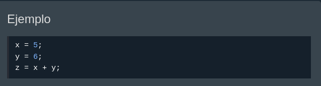

Las variables de JavaScript se pueden declarar de 4 formas:
En este primer ejemplo, x, y, z son variables no declarada.
Se declaran automáticamente cuando se utilizan por primera vez:
Se considera una buena práctica de programación declarar siempre las variables antes de su uso.
De los ejemplos puedes adivinar:
La palabra clave var se utilizó en todo el código JavaScript desde 1995 hasta 2015.
Las palabras clave let y const se agregaron a JavaScript en 2015.
La palabra clave var sólo debe usarse en código escrito para navegadores más antiguos.